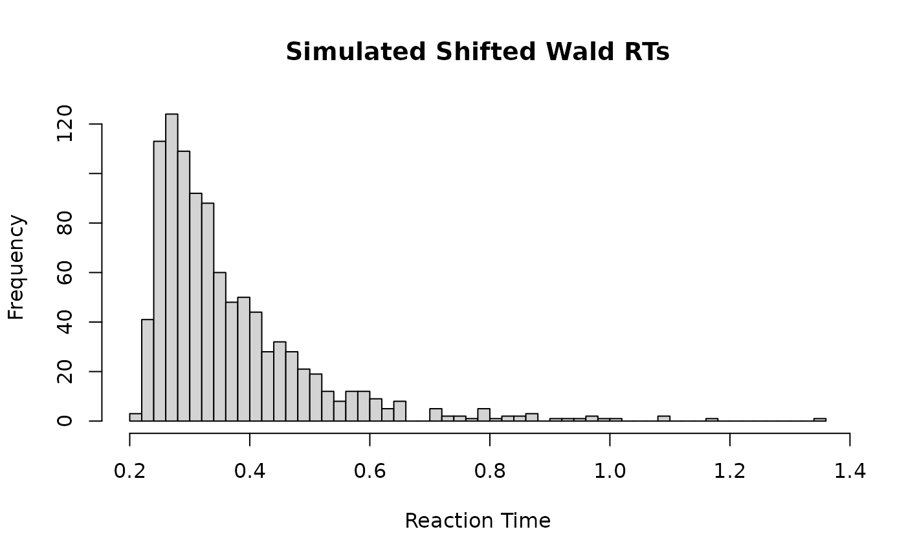

Shifted Wald (Shifted Inverse Gaussian) Model Functions
Source:R/shifted_wald.R, R/shifted_wald_brms.R
rshifted_wald.RdDensity, distribution function, and random generation for the Shifted Wald
distribution, also known as the Shifted Inverse Gaussian distribution. This
distribution is commonly used in modeling reaction times in cognitive tasks.
It is characterized by a drift rate (nu), a decision threshold (alpha),
and a non-decision time (ndt).
Functions:
rshifted_wald(): Simulates random draws from the Shifted Wald model.dshifted_wald(): Computes the density (likelihood) of the Shifted Wald distribution.pshifted_wald(): Computes the cumulative distribution function (CDF).qshifted_wald(): Computes the quantile function (inverse CDF).
Usage
rshifted_wald(n, nu = 3, alpha = 0.5, ndt = 0.2)
dshifted_wald(x, nu = 3, alpha = 0.5, ndt = 0.2, log = FALSE)
shifted_wald_lpdf_expose()
shifted_wald_stanvars()
shifted_wald(
link_mu = "log",
link_alpha = "log",
link_tau = "logit",
link_minrt = "identity"
)
log_lik_shifted_wald(i, prep)
posterior_predict_shifted_wald(i, prep, ...)
posterior_epred_shifted_wald(prep)Arguments
- n
Number of observations. If
length(n) > 1, the length is taken to be the number required.- nu
Drift rate. Must be positive. Represents the average speed of evidence accumulation. Range: (0, Inf).
- alpha
Decision threshold. Must be positive. Represents the amount of evidence needed to make a decision. Range: (0, Inf).
- ndt
Non-decision time (shift parameter). Must be non-negative. Represents time for processes like stimulus encoding and response execution. Range: [0, Inf).
- x
Vector of quantiles (observed reaction times).
- log
Logical; if TRUE, probabilities p are given as log(p).
- link_mu, link_alpha, link_tau, link_minrt
Link functions.
- i, prep
For brms' functions to run: index of the observation and a
brmspreparation object.- ...
Additional arguments.
Details
The Shifted Wald distribution describes the time it takes for a Wiener diffusion
process starting at 0 to reach a threshold alpha > 0, given a positive drift
rate nu > 0. The resulting time is then shifted by a non-decision time ndt >= 0.
The distribution is mathematically equivalent to shifting an Inverse Gaussian
distribution with mean mu = alpha / nu and shape parameter lambda = alpha^2.
That is, ShiftedWald(nu, alpha, ndt) = InverseGaussian(mean = alpha/nu, shape = alpha^2) + ndt.
The random generation algorithm implemented here is based on the method described
by Michael, Schucany, and Haas (1976), as used in the statmod package.
References
Michael, J. R., Schucany, W. R., & Haas, R. W. (1976). Generating Random Variates Using Transformations with Multiple Roots. The American Statistician, 30(2), 88–90. doi:10.2307/2683801
Anders, R., Alario, F., & Van Maanen, L. (2016). The shifted Wald distribution for response time data analysis. Psychological Methods, 21(3), 309–327. doi:10.1037/met0000063
Matzke, D., & Wagenmakers, E. J. (2009). Psychological interpretation of the ex-Gaussian and shifted Wald parameters: A diffusion model analysis. Psychonomic Bulletin & Review, 16(5), 798–817. doi:10.3758/PBR.16.5.798
Folks, J. L., & Chhikara, R. S. (1978). The inverse Gaussian distribution and its statistical application—a review. Journal of the Royal Statistical Society Series B: Statistical Methodology, 40(3), 263-275.
Examples
# Simulate 1000 RTs
rts <- rshifted_wald(1000, nu = 3, alpha = 0.5, ndt = 0.2)
hist(rts, breaks = 50, main = "Simulated Shifted Wald RTs", xlab = "Reaction Time")

if (FALSE) { # \dontrun{
# You can expose the lpdf function as follows:
if (requireNamespace("cmdstanr", quietly = TRUE)) {
sw_lpdf <- shifted_wald_lpdf_expose()
# Example call (using nu, alpha, ndt for clarity, map to mu, alpha, tau*minrt)
sw_lpdf(Y = 0.5, mu = 3, alpha = 0.5, tau = 0.5, minrt = 0.4) # ndt = 0.2
}
} # }
if (FALSE) { # \dontrun{
# Example brms formula using shifted_wald family
# bf(rt ~ condition + (1|subject),
# alpha ~ 1,
# tau ~ condition,
# minrt ~ 1, # Often fixed or estimated per subject
# family = shifted_wald())
} # }